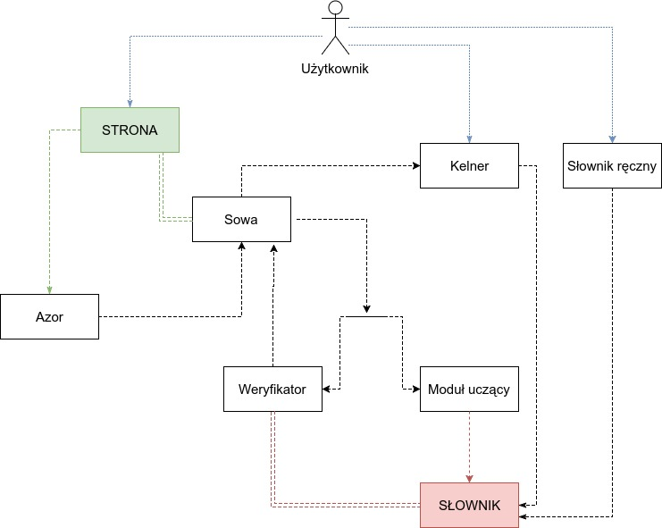

ZĄBA
Dokumentacja specyfikacyjna
Architektura logiczna

Opis działania modułów
Azor - wyszukiwacz pól tekstowych. Podobnie jak pies jest w stanie wywęszyć i wykopać z ziemi kość tak wyszukiwacz pól tekstowych umie odnaleźć pola tekstowe osadzone w stronie internetowej. Azor rozpoczyna swoją pracę za każdym razem gdy użytkownik otworzy nową stronę internetową - szuka na niej pól tekstowych i przekazuje informację o nich Sowie i Kelnerowi. Azor nie wchodzi w interakcję z użytkownikiem. Azor jest mądrym wyszukiwaczem i wie, że na stronie pola tekstowe mogą pojawiać się dynamicznie (bez odświeżania strony). Dlatego też szuka on co jakiś czas nowych pól na już otwartych stronach.
Sowa - skryba. Sowy, będące w baśniach uosobieniem mądrości, mogą dostąpić zaszczytu bycia nadwornym skrybą Króla Puszczy. Sowa odpowiedzialna jest bowiem za odczytywanie zawartości pola tekstowego, śledzenie pozycji kursora i wreszcie pisanie (nanoszenie poprawek) w polu tekstowym. Sowa jest jedynym modułem mającym pozwolenie do pisania w polu tekstowym. Czytając, sowa sprawdza czy nastąpiło:
a) zakończenie wprowadzania nowego słowa,
b) korekta wcześniej poprawionego słowa.
W pierwszym przypadku słowo zostaje przekazane do Weryfikatora, a w drugim do modułu uczącego.
Kelner - wspomaga Sowę w interakcjach z użytkownikiem. Kelner odpowiada za obsługę menu kontekstowego które pojawia się po naciśnięciu prawego przycisku myszy na słowie polu tekstowym. Użytkownik ma możliwość kliknięcia opcji “Nie poprawiaj słowa <X>”. Taka wiadomość jest następnie przekazywana do modułu uczącego.
Weryfikator - moduł na wejściu otrzymuje słowo od Sowy i zwraca jego poprawioną wersję oraz informację czy została dokonana poprawa z powrotem do Sowy (moduł może zwrócić niezmienione słowo jeśli błąd nie został wykryty). Weryfikator znajduje słowo najbliższe (wymagające najmniej przestawień liter) otrzymanemu na wejściu słowu na podstawie danych zawartych w słowniku.
Moduł uczący - otrzymuje słowa od Sowy, zapamiętuje je i w przypadku osiągnięcia określonej liczby popraw tego samego słowa jest ono dodawane do słownika.
Słownik ręczny - odpowiedzialny za dodawanie do słownika nowych i usuwanie istniejących już słów, bezpośrednio przez użytkownika (w sposób manualny).
Interakcja modułów z użytkownikiem
Kelner - interakcja z użytkownikiem jest możliwa tylko w momencie poprawy-na-powrót słowa przez użytkownika. Standardowo Sowa przekazuje wtedy informację o poprawie do modułu uczącego, a moduł uczący ją zapamiętuje. Jeśli użytkownik zakłada iż nigdy nie będzie chciał aby dane słowo było poprawiane może kliknąć na słowo prawym przyciskiem myszy i z menu kontekstowego wybrać opcję “Nie poprawiaj słowa <X>”. Menu kontekstowe obsługuje Kelner. Taka wiadomość jest następnie przekazywana do modułu uczącego.
Słownik ręczny - menu do zarządzania słownikiem znajduje się w ustawieniach wtyczki do przeglądarki. Użytkownik ma możliwość dodania nowych słów do słownika, przeglądania słów dodanych przez siebie oraz przez moduł uczący do słownika oraz usunięcia słów dodanych przez siebie lub moduł uczący ze słownika.
Przypadki użycia
Przypadek użycia: Poprawienie literówki klasy A
Aktor główny: Użytkownik
Streszczenie: Użytkownik popełnia błąd i oczekuje poprawienia popełnionej literówki klasy A, co następuje dzięki reakcji systemu.
Niezmienniki końcowe:
- Minimalna gwarancja: system nie zmieni słowa poprawnego w błędne
- Gwarancja w przypadku sukcesu: system zmieni słowo błędne w poprawne
Niezmienniki początkowe:
- Użytkownik wpisuje tekst w polu tekstowym dostępnym dla systemu (wtyczki do przeglądarki internetowej Google Chrome)
- Azor namierza pole tekstowe
- Sowa obserwuje pole tekstowe
Warunek początkowy: Użytkownik pisząc tekst popełnia błąd - literówkę klasy A
Scenariusz podstawowy:
- Użytkownik wpisuje w pole tekstowe dostępne dla systemu słowo zawierające literówkę klasy A.
- Sowa przechwytuje słowo i przekazuje je do Weryfikatora.
- Weryfikator weryfikuje wpisane słowo pod kątem występowania literówek klasy A.
- Weryfikator wykrywa błąd typu A i znajduje poprawną wersję słowa.
- Weryfikator odsyła do Sowy poprawioną wersję słowa.
- Sowa poprawia tekst wpisany przez użytkownika.
- Koniec.
Scenariusz alternatywny 1:
- Użytkownik wpisuje w pole tekstowe dostępne dla systemu słowo zawierające literówkę klasy A.
- Sowa przechwytuje słowo i przekazuje je do Weryfikatora.
- Weryfikator weryfikuje wpisane słowo pod kątem występowania literówek klasy A.
- Weryfikator nie wykrywa błędu.
- Weryfikator zwraca do Sowy niezmienione słowo, które od niej otrzymał.
- Koniec.
Scenariusz alternatywny 2:
- Użytkownik wpisuje w pole tekstowe dostępne dla systemu słowo zawierające literówkę klasy A.
- Sowa przechwytuje słowo i przekazuje je do Weryfikatora.
- Weryfikator weryfikuje wpisane słowo pod kątem występowania literówek klasy A.
- Weryfikator wykrywa błąd typu A i znajduje poprawną wersję słowa.
- Weryfikator odsyła do Sowy poprawioną wersję słowa.
- Sowa wykrywa że słowo w oryginalnej formie zostało dodane do słownika przez moduł uczący lub przez Kelnera.
- Koniec.
Przypadek użycia: Prośba o niepoprawianie literówki
Aktor główny: Użytkownik
Streszczenie: Użytkownik powraca do wpisanej przez siebie wersji słowa po tym jak system poprawił je, uznając za zawierające literówkę.
Niezmienniki końcowe:
- Minimalna gwarancja: W polu tekstowym powróci pierwotnie wpisana przez użytkownika wersja słowa.
- Gwarancja sukcesu: W polu tekstowym powróci pierwotnie wpisana przez użytkownika wersja słowa a moduł uczący odnotuje fakt poprawy.
- Gwarancja sukcesu ścieżki alternatywnej: W polu tekstowym powróci pierwotnie wpisana przez użytkownika wersja słowa a moduł uczący zanotuje prośbę o niepoprawianie wszystkich instancji wprowadzanego słowa.
Niezmienniki początkowe:
- Azor namierza pole tekstowe.
- Sowa obserwuje pole tekstowe.
- Następuje przypadek użycia “Poprawienie literówki klasy A” zakończony sukcesem
Scenariusz podstawowy (przed przekroczeniem limitu na-powrót-popraw):
- Użytkownik zauważa, że słowo zostało poprawione niezgodnie z jego wolą.
- Użytkownik cofa kursor pola tekstowego tak aby wskazywał na słowo poprawione niezgodnie z jego wolą.
- Użytkownik przywraca stan słowa sprzed poprawy podmieniając odpowiednie litery.
- Sowa wykrywa, że nastąpiło przywrócenie wyjściowej formy wcześniej poprawionego słowa.
- Sowa przekazuje pierwotną formę słowa do modułu uczącego.
- Moduł uczący zapisuje, że dokonano przywrócenia formy wyjściowej słowa.
- Koniec.
Scenariusz alternatywny 1:
- Użytkownik zauważa, że słowo zostało poprawione niezgodnie z jego wolą.
- Użytkownik cofa kursor pola tekstowego tak aby wskazywał na słowo poprawione niezgodnie z jego wolą.
- Użytkownik przywraca stan słowa sprzed poprawy podmieniając odpowiednie litery.
- Moduł uczący odnotowuje prośbę o niepoprawianie wszystkich instancji wprowadzanego słowa do wiadomości.
- Moduł uczący dodaje do słownika nowe słowo.
- Koniec.
Scenariusz alternatywny 2 (przekroczenie limitu na-powrót-popraw):
- Użytkownik zauważa, że słowo zostało poprawione niezgodnie z jego wolą.
- Użytkownik cofa kursor pola tekstowego tak aby wskazywał na słowo poprawione niezgodnie z jego wolą.
- Użytkownik przywraca stan słowa sprzed poprawy podmieniając odpowiednie litery.
- Sowa wykrywa, że nastąpiło przywrócenie wyjściowej formy wcześniej poprawionego słowa.
- Sowa przekazuje pierwotną formę słowa do modułu uczącego.
- Moduł uczący odnotowuje fakt przywrócenia poprzedniego stanu słowa przez użytkownika.
- Moduł uczący zauważa iż to samo słowo zostało wielokrotnie na-powrót-poprawione przez użytkownika.
- Moduł uczący dodaje do słownika nowe słowo.
- Koniec.
Scenariusz alternatywny 3 (z Kelnerem):
- Użytkownik zauważa, że słowo zostało poprawione niezgodnie z jego wolą.
- Użytkownik cofa kursor pola tekstowego tak, aby wskazywał na słowo poprawione niezgodnie z jego wolą.
- Użytkownik przywraca stan słowa sprzed poprawy podmieniając odpowiednie litery
- Użytkownika klika na słowo prawym przyciskiem myszy, uaktywnia Kelnera i z menu kontekstowego wybiera opcję permanentnego niepoprawiania danego słowa.
- Kelner przekazuje informację o nowym akceptowanym słowie do modułu uczącego.
- Moduł uczący dodaje do słownika nowe słowo.
- Koniec.